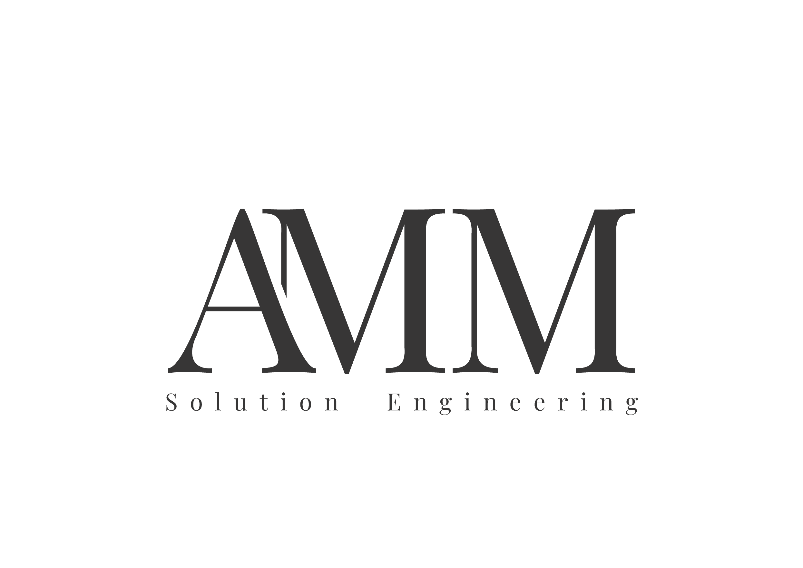

Sensor integration

Asset monitoring

Live dashboards

Sensor-based monitoring that turns measurements into actionable alerts — before downtime, energy loss, or an emergency repair bill.
I install sensors in your facility, read what they are telling you, and translate that data into concrete warnings. Not dashboards for their own sake — signals that protect your operations.
Your equipment is running. The lights are on. But what is happening inside that motor, that compressor, that cold storage unit — right now? Most breakdowns are not sudden. They announce themselves weeks in advance, through temperature drift, vibration patterns, or humidity creep. The problem is nobody is listening. I make that possible.
Your equipment already tells you when something is wrong. The problem is nobody is translating that signal. I install sensors on your assets, read the data continuously, and do the interpretation — so that when something drifts outside normal, you get a concrete warning before it becomes a breakdown, an energy loss, a compliance issue, or an emergency repair bill.
Sensors alone do nothing. Data alone does nothing. What matters is the step in between — understanding what the numbers mean for your specific equipment, and turning that into a signal you can act on. That is what I provide.
I visit your site, identify the critical assets, and determine what actually needs to be watched and why. No standard packages — only what makes sense for your situation.
I wire and configure the sensors myself and connect them to a microcontroller that reads them continuously. Everything from hardware to firmware, done in one go.
I define what normal looks like for your equipment and set the thresholds and triggers that produce a real warning — not just a number on a screen.
A live dashboard shows your key metrics. When something drifts outside normal bounds, you are alerted before it becomes a problem. I remain available for interpretation and support.
These are examples of what I have worked with — but the list is not fixed. Every installation starts with your specific assets and what actually needs to be watched.
Overheating is the most common early sign of electrical or mechanical failure. Continuous temperature monitoring on motors, switchgear, or storage environments catches drift before it becomes damage.
Warns against → Overheating · thermal runaway · product spoilageBearings, pumps, and rotating machinery develop characteristic vibration signatures when they begin to wear. I monitor amplitude and pattern — not just whether something is shaking.
Warns against → Bearing failure · imbalance · structural looseningExcess moisture corrodes contacts, degrades insulation, and promotes mould. In cold storage or controlled environments it is a compliance issue. Monitoring prevents slow deterioration from going unnoticed.
Warns against → Corrosion · insulation breakdown · compliance breachStructural shift, equipment settling, or vibration-induced loosening can be detected before visual inspection would catch it. I use 6-axis IMU sensors for precise movement tracking.
Warns against → Structural drift · mounting failure · seismic eventsTank levels, object presence, door or gate status, material fill height — distance sensors monitor state changes and physical boundaries without contact and without wear.
Warns against → Overflow · intrusion · process deviationLight levels flag energy waste, unexpected access, or environmental changes in sensitive areas. Combined with motion detection, they build a low-cost security and efficiency layer.
Warns against → Energy waste · unauthorised access · environmental drift
I am a one-person operation. That means you deal directly with the person who installs, configures, and interprets your system — not a helpdesk.
I take time to understand your setup, your constraints, and what a failure actually costs you — before recommending anything.
I lay out what sensors, what setup, and what it costs — in plain language. No hidden complexity, no overengineering.
I do the physical work myself: wiring, mounting, firmware, thresholds, dashboard. You do not have to coordinate between vendors.
After handover I remain reachable — to interpret alerts, adjust thresholds, or expand the system when you need more coverage.
Tell me what you are running, what you are worried about, or what has already gone wrong once too often. I will tell you honestly whether sensor monitoring can help — and what it would take.